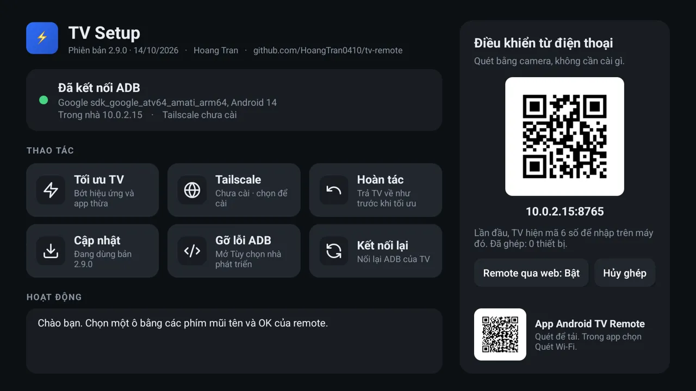
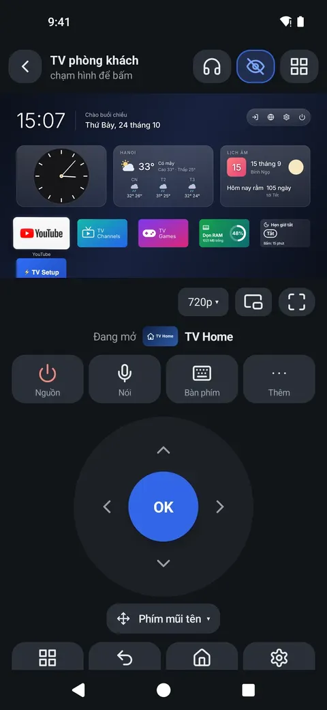
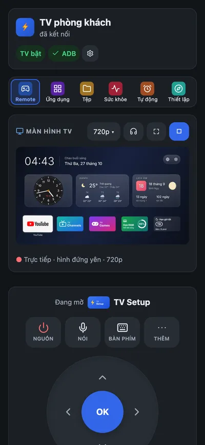
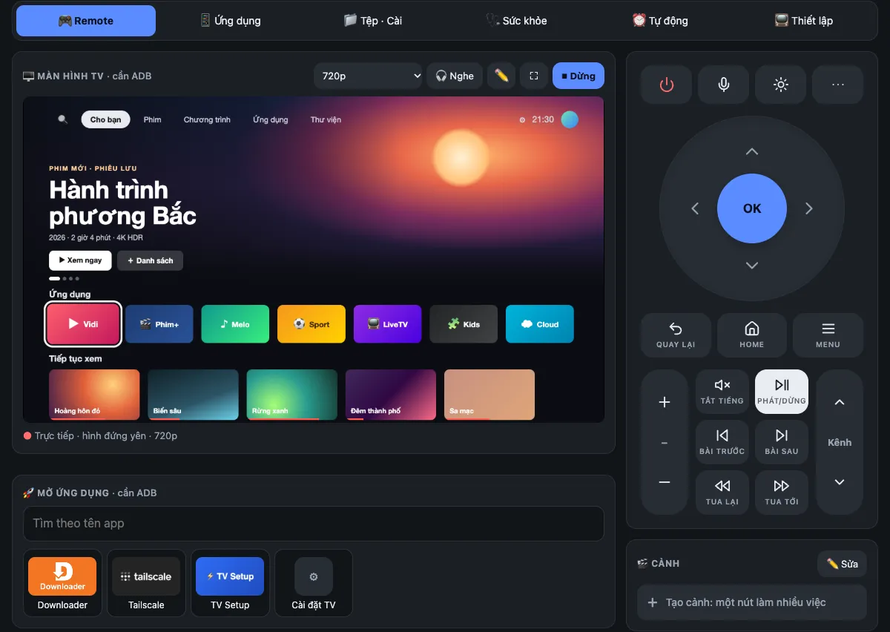
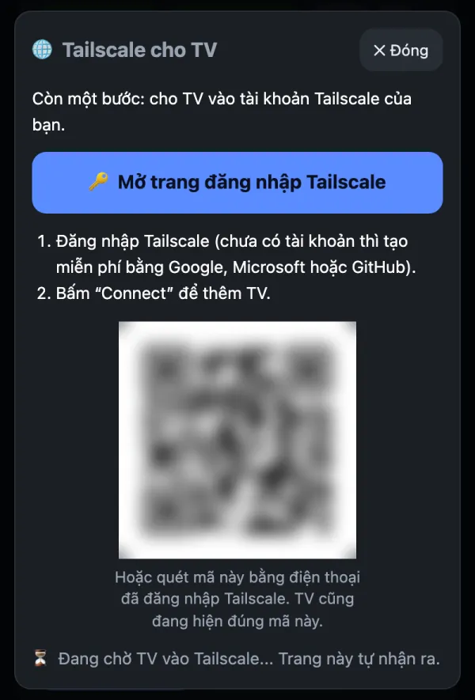

Thấy và chạm màn hình TV, cài app, quản lý tệp, canh giờ cho con. Từ điện thoại, iPhone hay máy tính, ở nhà hay ở xa. See and touch the TV screen, install apps, manage files, set screen time. From a phone, iPhone or computer, at home or away.


8 chuyện nhỏ mà phiền, và cách TV Remote xử lý.8 small, annoying things, and how TV Remote handles them.
Remote lại mất, lại hết pin
Remote lost, batteries dead
→ Điện thoại thành remote, dùng được ngay.Your phone is the remote, right away.
Gõ chữ bằng phím mũi tên
Typing with arrow keys
→ Gõ bằng bàn phím thật, có dấu tiếng Việt.Type on a real keyboard instead.
Con xem YouTube tới khuya
Kids on YouTube till midnight
→ Hẹn giờ tắt, giờ đi ngủ, giới hạn giờ xem. TV tự canh, khỏi phải nhắc.Sleep timer, bedtime, screen-time limits. The TV enforces them.
Bác vào Cài đặt, kéo xuống…
Go to Settings, scroll down…
→ Thấy màn hình TV nhà bố mẹ và bấm giúp từ xa.See your parents’ TV screen and press the buttons for them.
TV chậm, đầy app rác
Slow TV, full of bloat
→ Tối ưu một nút, hoàn tác bất cứ lúc nào.One-tap Optimize, undo any time.
Nhà dùng iPhone
You're on iPhone
→ Mở Safari, nhập mã 6 số. Không cài gì.Open Safari, enter a 6-digit code. Nothing to install.
Xem khuya sợ ồn
Late show, sleeping house
→ Nghe tiếng TV qua tai nghe điện thoại.Hear the TV in your phone's headphones.
Cài APK lên TV thì loay hoay
Sideloading an APK is a chore
→ Kéo thả từ máy tính, hoặc dán link là cài.Drag it from your computer, or paste a link.
Bốn chuyện thật, mỗi chuyện chưa tới 10 giây.Four real stories, under 10 seconds each.
Một bộ công cụ đầy đủ để dùng, dọn dẹp và quản lý chiếc TV của bạn.A complete toolkit to use, look after and manage your TV.
Xem trực tiếp màn hình TV và chạm lên hình như chạm lên TV. Không cần nhìn lên TV để biết mình đang ở menu nào.Watch the TV screen live and tap on it as if you were tapping the TV. No more looking up to see which menu you're in.

Hẹn giờ, giờ đi ngủ và giới hạn app do chính TV thực hiện. Điện thoại, máy tính tắt hết vẫn chạy, và cũng không ai “lỡ quên” được.Timers, bedtime and app limits run on the TV. No phone or computer has to stay on, and nobody gets to “forget”.
Những việc trước đây phải cắm máy tính, gõ lệnh ADB, giờ chỉ là vài cú bấm.What used to take a laptop and ADB commands is now a few clicks.

Một nút cài và đăng nhập Tailscale lên TV: tự tải bản chính thức, kiểm tra tệp tải về, tự bật lại mỗi khi TV khởi động. Bạn chỉ cần quét mã QR để đăng nhập.One button installs and signs in Tailscale on the TV: official build, checksum verified, restarts with the TV. You just scan a QR code to sign in.

Tiếng TV phát trên điện thoại hoặc trình duyệt, chỉ khoảng 8 KB/s. Nghe tiếp cả khi khóa màn hình.TV sound on your phone or browser at about 8 KB/s. Keeps playing with the screen locked.
Tắt hiệu ứng, app đề xuất, đổi màn hình chính nhẹ hơn. App chỉ bị tạm tắt, không bị xóa: bấm Hoàn tác là trở lại như cũ.Fewer animations, no bloat, a lighter home screen. Disabled, never deleted; Undo puts it all back.
Khi TV hỏi lại “Cho phép gỡ lỗi?”, TV Setup tự cho phép đúng máy của bạn, và chỉ máy của bạn.When the TV asks “Allow debugging?” again, TV Setup approves your own device, and only yours.
TV chưa bật ADB? App tự dẫn bạn tới chỗ bật, hoặc cài TV Setup giúp chỉ bằng nút remote.ADB not on yet? The app leads you there, or installs TV Setup for you using remote keys only.
Giao diện tiếng Việt và tiếng Anh, đổi một chạm.Vietnamese and English interface, one tap to switch.
Cả hai app tự báo và cài bản mới ngay trong app, không cần CH Play.Both apps find and install new versions in-app, no Play Store needed.
Không có máy chủ trung gian, không có tài khoản, không có gì lọt ra ngoài. Dữ liệu chỉ đi trong mạng nhà bạn, hoặc qua kết nối Tailscale riêng của bạn.No middle server, no account, nothing to leak. Data stays on your home network, or inside your own Tailscale tunnel.
Remote thì nhiều app làm được. Cái làm người ta bỏ cuộc là đưa được app lên TV và bật được ADB. TV Remote lo phần đó.Plenty of apps press buttons. What makes people give up is getting an app onto the TV and turning ADB on. TV Remote handles that.
Gõ mã 2397346 vào Downloader là có TV Setup. App điện thoại còn tự gửi lệnh mở Downloader qua giao thức remote của Google, nên cài được khi TV chưa bật ADB.Type 2397346 into Downloader and TV Setup arrives. The phone app can even open Downloader for you through Google’s remote protocol, so it installs before ADB is on.
TV Setup mở thẳng Tùy chọn nhà phát triển. App điện thoại và app máy tính có trợ lý “Bật ADB giúp tôi”, chỉ dùng nút remote.TV Setup opens Developer options directly. The phone app and the computer app have a “Help me turn on ADB” assistant that only uses remote keys.
TV hỏi lại khi quên máy bạn. TV Setup tự bấm cho phép, nhưng chỉ khi mã khóa trùng đúng máy đã ghép, và báo trên TV mỗi lần.The TV asks again when it forgets your device. TV Setup allows it for you, only when the key matches a paired device, with a notice on the TV every time.
| TV Remote | App Google TVGoogle TV app | App remote trên storeStore remote apps | scrcpy + adb | |
|---|---|---|---|---|
| Bấm nút, gõ chữ, nói lệnhKeys, typing, voice | CóYes | CóYes | CóYes | Gõ phím, không có giọng nóiKeyboard, no voice |
| Xem màn hình TV, chạm lên hìnhSee the TV screen, touch it | Có, trên cả điện thoạiYes, on a phone too | KhôngNo | Một số appSome appsthường phải bật ADB hoặc rootoften needs ADB or root | Có, trên máy tínhYes, on a computer |
| Nghe tiếng TV trên điện thoạiTV sound on the phone | CóYestai nghe, loa TV imheadphones, TV speakers quiet | KhôngNo | Hiếm cóRare | Trên máy tínhOn a computer |
| Dùng từ iPhoneFrom an iPhone | Có, qua trình duyệtYes, in the browserkhông phải cài gìnothing to install | Cài appInstall an app | Tùy appDepends | KhôngNo |
| Quản lý app, tệp, cài APKApps, files, install APKs | CóYes | KhôngNo | Thường là tính năng trả phíOften a paid feature | Gõ lệnh adbadb commands |
| Hẹn giờ tắt, giờ đi ngủ, giới hạn từng appSleep timer, bedtime, per-app limits | Có, chạy ngay trên TVYes, enforced on the TV | Không có trong appNot in the appGoogle TV có hồ sơ trẻ em trên một số máyGoogle TV has kids profiles on some devices | Hiếm cóRare | KhôngNo |
| Điều khiển khi không ở nhàControl from away | Có, Tailscale cài bằng một nútYes, Tailscale in one button | Không, phải cùng Wi-FiNo, same Wi-Fi only | Thường khôngUsually not | Tự dựng VPNSet up a VPN yourself |
| Bật ADB, cài lên TVTurning on ADB, installing on the TV | Dẫn từng bướcGuided step by stepcài được chỉ bằng nút remoteinstalls with remote keys alone | Không cầnNot needed | Tự làmDo it yourself | Tự làm, gõ lệnhYourself, by command |
| Quảng cáo, mã nguồnAds, source code | Không quảng cáo, mã nguồn mởNo ads, open source | Không quảng cáo, mã đóngNo ads, closed source | Thường có quảng cáoOften has ads | Không quảng cáo, mã nguồn mởNo ads, open source |
So với kiểu app thường gặp ở mỗi nhóm; từng app cụ thể có thể khác. Thấy chỗ nào sai, mở issue trên GitHub giúp mình.Compared with what is typical in each group; a given app may differ. Spot a mistake? Open an issue on GitHub.
Cả ba dùng chung một giao diện. Dùng một hay cả ba đều được.All three share the same interface. Use one, or all of them.
Chỉ cần remote của TV. Không cần máy tính, không cần cáp.All you need is the TV's remote. No computer, no cable.
Android 7 trở lên. Điện thoại và TV cùng mạng Wi-Fi.Android 7 or newer. Phone and TV on the same Wi-Fi.
Một app có cửa sổ riêng, khoảng 20 MB. Không cần cài Python, adb hay gì thêm.An app with its own window, about 20 MB. Nothing else to install: no Python, no adb.
Bằng remote của TV, khoảng 1 phút. Tên menu lấy theo TV Sony, hãng khác có thể hơi khác. TV Setup và app điện thoại đều có thể dẫn bạn tới đúng chỗ.With the TV's remote, about a minute. Menu names are from Sony; others differ slightly. TV Setup and the phone app can take you to the right screen.
| 🌐 Web của TVTV web page | 📱 App điện thoạiPhone app | 💻 App máy tínhComputer app | |
|---|---|---|---|
| Remote, xem và chạm hình TV, vẽ, đưa ảnh lên TVRemote, see and touch the TV picture, draw, put a picture on the TV | |||
| Nghe tiếng TVListen to the TV | khi trang đang mởwhile the page is open | cả khi tắt màn hìnhscreen off too | chất lượng caohigh quality |
| Ứng dụng, tệp, sức khỏe, hẹn giờ, cài đặtApps, files, health, timers, settings | |||
| Nhiều TV, đổi TVSeveral TVs | chỉ TV đóonly that TV | ||
| Bật TV đã tắt hẳn (Wake-on-LAN)Turn on a fully-off TV (Wake-on-LAN) | TV tắt thì trang tắtoff with the TV | ||
| Bấm phím khi chưa có ADBKeys before ADB | |||
| Widget, phím âm lượng của máyWidget, the phone's volume keys | |||
| Cài gì trên máy điều khiểnInstall on your device | không cầnnothing | appthe app | appthe app |
Không. Miễn phí hoàn toàn, không quảng cáo, không bản trả phí. Mã nguồn công khai trên GitHub.
No. Completely free, no ads, no paid tier. The source is public on GitHub.
ADB là cổng mà Android dùng để máy khác điều khiển nó, cũng là thứ cho phép xem màn hình, cài app, quản lý tệp. Máy nào muốn dùng đều phải được bạn bấm “Cho phép” ngay trên TV. Chỉ dùng trong mạng nhà bạn tin và qua Tailscale; muốn thu hồi thì vào Tùy chọn nhà phát triển → Thu hồi quyền gỡ lỗi USB.
ADB is how Android lets another device control it; it's what makes screen viewing, app installs and file management possible. Every device must be approved by you, on the TV screen. Use it on a home network you trust and over Tailscale; revoke any time in Developer options → Revoke USB debugging authorizations.
Để bấm nút thì không: app điện thoại và app máy tính dùng giao thức Android TV Remote của Google, chỉ cần ghép mã. Xem màn hình, quản lý app, tệp, hẹn giờ thì cần ADB.
Not for buttons: the phone app and the computer app use Google's Android TV Remote protocol, just pair a code. Screen view, apps, files and timers need ADB.
Có. Cài TV Setup lên TV (mã Downloader 2397346), rồi mở trang TV hiện ra trên Safari. Thêm vào Màn hình chính để dùng như một app.
Yes. Install TV Setup on the TV (Downloader code 2397346), then open the page it shows in Safari. Add it to your Home Screen to use it like an app.
Đúng vậy, đó là bảo vệ bản quyền của Android, không ứng dụng nào vượt qua được. Nút bấm, âm lượng, nghe tiếng vẫn dùng bình thường.
That's Android's copy protection; no app can capture it. Buttons, volume and audio still work normally.
Ở chế độ chờ thì một nút là bật, kể cả qua Tailscale. Tắt hẳn thì cần Wake-on-LAN, gửi từ trong mạng nhà: app điện thoại và app máy tính đều tự gửi khi đang cùng mạng với TV. Ở xa thì chỉ app máy tính bật được, bằng cách nhờ một máy ở nhà gửi qua SSH.
From standby, one press wakes it, even over Tailscale. Fully off needs Wake-on-LAN, sent from inside the home network: the phone app and the computer app both send it when on the TV's network. From away, only the computer app can, by asking a machine at home to send it over SSH.
Không. Nó chặn quảng cáo và trang độc trong các app khác; YouTube phát quảng cáo từ chính máy chủ video của nó.
No. It blocks ads and bad sites in other apps; YouTube serves its ads from the same servers as the videos.
Play Protect cảnh báo mọi app ngoài CH Play có quyền cài APK. Toàn bộ mã nguồn nằm trên GitHub để bạn tự kiểm tra; chọn “Vẫn cài” nếu bạn tin.
Play Protect warns about any non-Play app that can install APKs. All the source is on GitHub for you to check; choose “Install anyway” if you trust it.
Hai phút cài đặt, dùng cả đời. Miễn phí, mã nguồn mở, không quảng cáo.Two minutes to set up, yours for good. Free, open source, no ads.